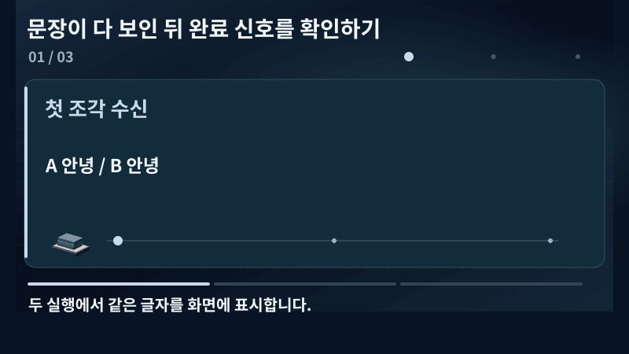

AI가 뽑은 행사명과 날짜 확인하기
독서 모임 공지에는 시작일이 없습니다. AI가 날짜를 비워 둔 경우와 날짜 항목을 통째로 빠뜨린 경우를 노트북에서 비교해 보세요. 응답이 도중에 끊겼을 때는 어디까지 읽을 수 있는지도 확인합니다.
오늘 읽을 공지와 수업 노트북
“성인 독서 모임을 엽니다. 시작일은 추후 안내합니다.” 이 공지를 신청 목록에 옮긴다면 행사명에는 ‘독서 모임’, 대상에는 ‘성인’을 적으면 됩니다. 시작일은 어떻게 적을까요? 임의로 날짜를 채우면 신청자는 그날 모임이 열린다고 생각할 겁니다. 이 수업에서는 날짜가 미정이라는 사실도 값으로 남깁니다.
예제 셀 01–10은 그대로 실행하세요. ‘과제’ 셀에서는 ... 부분을 채운 뒤 그 셀을 다시 실행합니다. 문제 바로 아래의 정답을 펼치면 내 코드와 출력을 비교할 수 있습니다.
Python 3.12에 Pydantic 2, OpenAI SDK, HTTPX가 설치된 커널을 사용합니다. 노트북에는 모의 응답이 들어 있어 API 키 없이 실습할 수 있습니다.
| 수업 | 함께 읽을 사례 | 판단할 내용 |
|---|---|---|
| 1–2교시 | 공지 한 건을 세 필드로 옮기기 | 시작일 미정과 항목 누락 |
| 3–4교시 | 공지에 잘못 적힌 행사명 확인 | 형식 오류와 사실 오류 |
| 5–6교시 | 응답 본문과 실패 사유 추적 | 거절·빈 출력·미완료의 처리 순서 |
| 7–8교시 | 같은 문장이 표시된 두 연결 비교 | 부분 표시·완료·사용량 기록 |
행사명·시작일·대상을 어떻게 기록할까요?
행사명·시작일·대상을 어떻게 기록할까요?
| 항목 | 이 공지에 넣을 값 | 판단 근거 |
|---|---|---|
| title | 독서 모임 | 원문에 적힌 행사명 |
| start | null | 날짜를 추후 안내한다고 했으므로 값은 미정 |
| audience | adult | 성인은 adult, 어린이는 child, 확인할 수 없으면 unknown으로 기록 |
‘독서 모임 / 성인 / 날짜 미정’과 ‘성인 / 날짜 미정 / 독서 모임’은 사람이 보면 같은 안내입니다. 첫 번째 자리에서 행사명을 꺼내던 프로그램은 두 번째 안내에서 ‘성인’을 꺼내겠지요. 행사명에 title이라는 이름을 붙이면 순서가 바뀌어도 찾을 수 있습니다. 어떤 항목을 꼭 넣어야 하고 각 항목에 어떤 값을 쓸 수 있는지 정한 규칙을 스키마라고 합니다.
시작일 미정과 항목 누락
start 칸에 null이 적힌 경우와 칸 자체가 없는 경우를 나란히 보세요.
날짜가 미정이어도 start라는 키는 있습니다.
원문에는 시작일을 나중에 안내한다고 적혀 있습니다. 모델이 start에 null을 넣어 보냈습니다. 파이썬으로 이 값을 읽어 봅시다.
import json
raw = '{"title":"독서 모임","start":null,"audience":"adult"}'
notice = json.loads(raw)
print(notice["start"])셀 01 실행 결과
None
None이 나왔습니다. start라는 칸은 있고 날짜만 비어 있다는 뜻입니다. start를 통째로 빼면 같은 줄에서 KeyError가 납니다. 꺼낼 칸이 없기 때문입니다.
시작일이 미정이어도 start 항목은 있어야 합니다.
과제 01 · 시작일 칸 찾기
has_start의 빈칸에 식 하나를 넣으세요. start가 있으면 값이 None이어도 True, 키가 빠졌으면 False가 나와야 합니다.
def has_start(record):
return ... # 키가 있는지 검사
missing = {"title": "독서 모임", "audience": "adult"}
print(has_start(missing))정답 코드와 실행 결과 보기
def has_start(record):
return "start" in record
missing = {"title": "독서 모임", "audience": "adult"}
print(has_start(missing))정답 코드 실행 결과
False
이 공지에는 start가 없으므로 False입니다. 날짜가 미정인 공지라면 값이 None이어도 start라는 키는 있으므로 True가 됩니다.
공지 세 항목의 규칙 정하기
이제 행사명, 시작일, 대상을 어떻게 적을지 코드로 정합니다. Notice는 공지 한 건의 규칙을 담은 Pydantic 모델입니다. 셀을 실행하면 꼭 있어야 하는 항목의 이름이 나옵니다.
from typing import Literal
from pydantic import BaseModel, ConfigDict, ValidationError
class Notice(BaseModel):
model_config = ConfigDict(extra="forbid", strict=True)
title: str
start: str | None
audience: Literal["adult", "child", "unknown"]
print(Notice.model_json_schema()["required"])셀 02 실행 결과
['title', 'start', 'audience']
출력 목록에 start도 들어 있습니다. str | None은 날짜를 문자열로 적거나 미정일 때 None을 쓰도록 허용합니다. 기본값을 지정하지 않았으므로 start 자체를 빼면 오류가 납니다. audience에는 Literal에 적은 세 값만 쓸 수 있고, extra="forbid" 때문에 세 항목 외에 다른 항목을 덧붙여도 오류가 납니다.
원문은 독서 모임 공지인데, 모델이 행사명을 ‘요리 모임’으로 잘못 읽었다고 해 봅시다. 이 응답을 Notice에 넣으면 어떻게 될까요?
reply_notice = {"title": "요리 모임", "start": None, "audience": "adult"}
checked = Notice.model_validate(reply_notice)
print(checked.title)셀 03 실행 결과
요리 모임
오류 없이 ‘요리 모임’이 나옵니다. 두 번째 줄에서 Notice가 확인한 것은 title에 문자열이 들어 있는지입니다. 공지 원문은 이 함수에 건네지도 않았으니, 행사명이 바뀌었는지는 알아낼 수 없습니다.
형식 검사를 마쳤으면 행사명을 공지 원문과 대조하세요.
과제 02 · 오류가 난 필드 이름 꺼내기
이번 공지에는 audience에 everyone이 들어 있습니다. 빈칸을 채워 Pydantic이 오류를 발견한 필드 이름을 출력하세요. 첫 오류의 loc에는 문제가 생긴 위치가 순서대로 들어 있습니다.
reply_notice = {"title": "독서 모임", "start": None, "audience": "everyone"}
try:
Notice.model_validate(reply_notice)
except ValidationError as error:
first_error = error.errors()[0]
field = ...
print(field)정답 코드와 실행 결과 보기
reply_notice = {"title": "독서 모임", "start": None, "audience": "everyone"}
try:
Notice.model_validate(reply_notice)
except ValidationError as error:
first_error = error.errors()[0]
field = first_error["loc"][0]
print(field)정답 코드 실행 결과
audience
Literal에 적은 선택지에 everyone이 없어 ValidationError가 납니다. 이때 첫 오류의 loc는 ('audience',)이므로 첫 값을 꺼내면 오류가 난 필드 이름을 얻습니다.
모델에게 같은 형식을 요청하기
셀 02에서 정한 Notice의 규칙을 요청에도 넣어 봅시다. Notice.model_json_schema()로 규칙을 꺼내 쓰면 나중에 선택지를 바꿀 때 Notice 한 곳만 고치면 됩니다.
format_spec = {"type": "json_schema", "name": "notice",
"strict": True, "schema": Notice.model_json_schema()}
request_options = {"input": "성인 독서 모임을 엽니다. 시작일은 추후 안내합니다.",
"instructions": "원문에 없는 시작일은 null로 기록하세요.",
"text": {"format": format_spec}}
print(format_spec["schema"]["properties"]["audience"]["enum"])셀 04 실행 결과
['adult', 'child', 'unknown']
이 셀은 요청에 넣을 request_options를 만듭니다. 실제로 SDK를 호출하는 코드는 셀 09에 있습니다. 요청에서 형식을 지정해도 모델이 응답을 거절하거나 응답이 도중에 끊길 수 있으니, 받은 내용은 따로 검사합니다.
응답 안에서 읽을 본문 찾기
셀 05의 response는 실제 응답에서 필요한 항목만 남겨 만든 예입니다. output 안에 항목이 둘 있습니다. 공지 본문이 어느 쪽에 들어 있는지 먼저 찾아보세요.
셀 05 그림 · 중첩 응답에서 item과 part 따라가기reasoning을 건너뛰고 message.content에서 output_text의 text를 찾으세요.message = {"type": "message", "content": [{"type": "output_text", "text": raw}]}
response = {"status": "completed",
"output": [{"type": "reasoning"}, message]}
def message_parts(response):
parts = []
for item in response["output"]:
if item["type"] == "message":
parts.extend(item["content"])
return parts
print(message_parts(response)[0]["text"])셀 05 실행 결과
{"title":"독서 모임","start":null,"audience":"adult"}output의 첫 항목은 reasoning이고, 공지가 들어 있는 message는 그 뒤에 있습니다. message_parts는 message를 찾아 content를 꺼냅니다. 화면에 찍힌 본문은 아직 JSON 문자열이므로 공지로 쓰기 전에 Notice로 검사합니다.
과제 03 · 메시지에서 본문 조각만 모으기
join_text를 완성해 ‘독서 모임’을 출력하세요. type이 output_text인 조각에서만 text를 꺼내고, 받은 순서대로 이어 붙이세요. 거절을 처리하는 코드는 셀 06에서 다룹니다.
def join_text(parts):
... # 이곳에 함수 본문 작성
parts_to_read = [{"type": "annotation"},
{"type": "output_text", "text": "독서 "},
{"type": "output_text", "text": "모임"}]
print(join_text(parts_to_read))정답 코드와 실행 결과 보기
def join_text(parts):
texts = []
for part in parts:
if part["type"] == "output_text":
texts.append(part["text"])
return "".join(texts)
parts_to_read = [{"type": "annotation"},
{"type": "output_text", "text": "독서 "},
{"type": "output_text", "text": "모임"}]
print(join_text(parts_to_read))정답 코드 실행 결과
독서 모임
첫 조각은 annotation이라 text가 없습니다. type을 확인한 뒤 글자만 모으면 이 조각을 건너뜁니다. ‘독서 ’ 끝의 공백도 본문의 일부라서, 그대로 붙여야 ‘독서 모임’이 됩니다.
같은 공지가 도착한 다섯 가지 모습
같은 공지가 도착한 다섯 가지 모습
| 받은 응답 | 확인할 부분 | 다음 행동 |
|---|---|---|
| 도중 중단 | status가 incomplete | 부분 문자열을 공지로 해석하지 않고 중단 |
| 처리 거절 | 완료 응답 속 refusal | 거절로 안내 |
| 본문 없음 | 완료 응답에 읽을 텍스트가 없음 | 빈 출력으로 안내 |
| 형식 불일치 | 본문은 있지만 필수 항목 누락 | 누락된 필드 확인 |
| 형식 통과 | 공지 3개 필드 확인 | 원문과 대조 |
응답을 어디서 멈춰야 할까요?
inspect_response는 먼저 status를 읽습니다. 응답이 끝까지 왔으면 메시지에 refusal이 있는지 살핍니다. 거절이 없을 때만 본문 조각을 이어 붙이고, 공백을 빼고도 글자가 남아 있으면 Notice로 형식을 검사합니다.
def inspect_response(response):
if response["status"] != "completed":
return {"ok": False, "reason": "incomplete"}
parts = message_parts(response)
if any(part["type"] == "refusal" for part in parts):
return {"ok": False, "reason": "refusal"}
text = "".join(p["text"] for p in parts if p["type"] == "output_text")
if not text.strip():
return {"ok": False, "reason": "empty"}
try:
data = Notice.model_validate_json(text)
except ValidationError:
return {"ok": False, "reason": "invalid_schema"}
return {"ok": True, "data": data.model_dump()}이 함수는 status가 completed가 아닌 경우를 모두 incomplete로 표시합니다. 한 메시지에 글과 거절이 함께 있어도 결과는 refusal입니다. 글을 모으기 전에 거절부터 확인하기 때문입니다. 함수를 호출한 쪽에서는 ok를 먼저 읽으세요. True이면 data에 공지가 있고, False이면 reason에 멈춘 이유가 들어 있습니다.
서버는 응답을 마쳤다고 했는데 메시지를 열어 보니 content가 비어 있습니다. 이 응답 하나를 셀 06의 함수에 건네 봅시다.
empty_reply = {
"status": "completed",
"output": [{"type": "message", "content": []}],
}
print(inspect_response(empty_reply))셀 07 실행 결과
{'ok': False, 'reason': 'empty'}status는 completed이지만 읽을 글이 한 글자도 없어 reason이 empty입니다. 이 경우에는 data가 없습니다. 13장에서 다음 함수에 공지를 건넬 때는 ok가 True인 경우에만 data를 꺼냅니다.
과제 04 · 원문과 대조할 공지 꺼내기
원문을 확인할 사람에게 공지 한 건을 건네려 합니다. notice_for_review를 완성하세요. 검사가 성공했으면 data에 담긴 공지를, 실패했으면 None을 돌려주세요. 셀 05의 정상 응답으로 실행해 보세요.
def notice_for_review(result):
... # 검사에 성공한 공지만 꺼내세요
print(notice_for_review(inspect_response(response)))정답 코드와 실행 결과 보기
def notice_for_review(result):
if result["ok"]:
return result["data"]
return None
print(notice_for_review(inspect_response(response)))정답 코드 실행 결과
{'title': '독서 모임', 'start': None, 'audience': 'adult'}이번 응답에는 세 항목을 담은 data가 있어 공지를 꺼낼 수 있습니다. 셀 07처럼 본문이 비었으면 ok가 False이고 data가 없으므로 None을 돌려줍니다.
화면에 문장이 다 보이면 끝난 걸까요?
두 화면 모두 “안녕하세요.”의 마침표까지 표시합니다. 아래 그림에서 그다음을 보세요. 한쪽에는 서버의 완료 신호가 도착하고, 다른 쪽은 신호를 받기 전에 연결이 끊깁니다.
두 수신 경로를 GIF로 비교하기

마침표가 나타난 뒤 두 실행에 완료 신호가 모두 오는지 확인하세요.
두 화면에 같은 문장이 보여도 A만 완료 이벤트를 받습니다. B는 최종 결과를 반환할 수 없습니다.
화면의 마지막 글자와 서버의 완료 신호는 서로 다른 정보입니다.
서버의 완료 신호를 받기 전에 연결이 끊겼습니다. 아래 목록은 끊기기 전까지 도착한 이벤트입니다. delta에는 방금 도착한 글자가 들어 있습니다.
events = [
{"type": "response.output_text.delta", "delta": "안녕"},
{"type": "response.output_text.delta", "delta": "하세요."},
]
text = ""
for event in events:
if event["type"] == "response.output_text.delta":
text += event["delta"]
print(text)셀 08 실행 결과
안녕하세요.
화면에는 마침표까지 찍혔지만 events에는 response.completed가 없습니다. 받은 글자는 보여 줄 수 있어도 응답이 끝났다고 판단할 근거는 없습니다. 완료 이벤트가 오면 SDK의 event.response.usage에서 사용량을 읽을 수 있습니다. 완료 신호가 와도 사용량 값이 비어 있을 수 있으므로, 사용량만 보고 완료 여부를 판단하면 안 됩니다.
과제 05 · 완료 이벤트 찾기
이번 연결에서는 마지막에 response.completed가 도착했지만 사용량 정보가 없습니다. 빈칸에 이벤트 이름을 써서, 완료 신호가 들어왔을 때만 True를 돌려주도록 완성하세요.
def is_complete(events):
for event in events:
if event["type"] == ...:
return True
return False
last_events = [{"type": "response.completed", "response": {}}]
print(is_complete(last_events))정답 코드와 실행 결과 보기
def is_complete(events):
for event in events:
if event["type"] == "response.completed":
return True
return False
last_events = [{"type": "response.completed", "response": {}}]
print(is_complete(last_events))정답 코드 실행 결과
True
토큰 수가 없어도 type에 response.completed가 적혀 있으므로 True입니다. 셀 08처럼 글자 조각만 도착했다면 반복이 끝날 때까지 완료 신호를 찾지 못해 False가 됩니다.
SDK 호출부터 성공·시간 초과까지
이번에는 셀 06의 검사기를 SDK 호출에 연결합니다. 정상적으로 응답을 받으면 reply.model_dump()로 딕셔너리를 만들어 inspect_response에 건넵니다.
from openai import OpenAI, APITimeoutError
def request_notice(client):
try:
reply = client.responses.create(model="classroom-mock", **request_options)
except APITimeoutError:
return {"ok": False, "reason": "timeout"}
return inspect_response(reply.model_dump())기다리던 중 APITimeoutError가 발생하면 검사할 reply가 없습니다. 이때 request_notice는 reason에 timeout을 담아 돌려줍니다.
응답을 기다리다가 제한 시간이 지나면 어떻게 될까요? 아래 셀의 모의 연결은 요청을 보내는 순간 읽기 시간 초과를 일으킵니다. 연결 설정은 제공된 코드 그대로 두고 request_notice의 결과를 확인하세요.
import httpx
def timeout_transport(request):
raise httpx.ReadTimeout("classroom timeout", request=request)
with OpenAI(
api_key="classroom-placeholder",
max_retries=0,
http_client=httpx.Client(transport=httpx.MockTransport(timeout_transport)),
) as client:
print(request_notice(client))셀 10 실행 결과
{'ok': False, 'reason': 'timeout'}SDK가 APITimeoutError를 일으키면 셀 09의 함수가 reason에 timeout을 담습니다. 셀 07의 empty는 응답을 열어 보고 알게 된 결과였지요. 여기서는 검사할 응답을 받기 전에 기다리는 시간이 끝났습니다.
어느 단계에서 멈췄는지 읽기
어느 단계에서 멈췄는지 읽기
| 상황 | 알 수 있는 사실 | 후속 처리 |
|---|---|---|
| 요청 제한 시간 초과 | 호출자가 시간 안에 응답을 받지 못함 | 완료 여부 미확인으로 기록. 같은 공지를 중복 저장하지 않도록 확인 |
| 서버가 incomplete 상태를 보냄 | 응답은 받았고 완성되지 않음 | 제공된 미완료 사유 확인 |
| 완료 응답이 거절을 포함 | 답변 대신 거절을 받음 | 거절을 표시하고 저장 중단 |
| 스키마는 통과했지만 제목이 틀림 | 본문과 원문의 정보가 다름 | 원문과 대조할 때까지 저장 보류 |
로그에 “내용 없음”만 남아 있으면 어디를 살펴야 할까요? timeout이면 응답을 제때 받았는지부터 확인합니다. empty이면 이미 응답을 받았으니 메시지 안에 읽을 본문이 있었는지 살펴봅니다.
종합 코딩 과제 · 은행 앱 점검 공지
가상의 은행 앱에 “01:00부터 이체 점검. 종료 시각은 추후 안내합니다.”라는 공지가 올라왔습니다. 모델이 종료 시각으로 02:00을 뽑았다면 앱에 그대로 표시해도 될까요? 이번에는 형식 검사를 마친 값과 공지 원문에서 확인한 값을 비교합니다.
과제 06 · 가상의 은행 앱에 표시할 점검 시간 정하기
display_end를 완성하세요. confirmed_end는 원문에서 확인한 종료 시각이고 candidate_end는 모델이 뽑은 시각입니다. 두 값이 다르면 “원문 확인”, 둘 다 None이면 “종료 미정”을 돌려주세요. 두 값이 같은 시각이면 그 시각을 그대로 돌려주세요.
def display_end(confirmed_end, candidate_end):
... # 세 경우의 판단과 결과 작성
print(display_end(None, "02:00"))정답 코드와 실행 결과 보기
def display_end(confirmed_end, candidate_end):
if confirmed_end != candidate_end:
return "원문 확인"
if confirmed_end is None:
return "종료 미정"
return confirmed_end
print(display_end(None, "02:00"))정답 코드 실행 결과
원문 확인
원문은 종료 시각을 추후 안내한다고 했는데 모델은 02:00을 넣었습니다. 앱에 이 시각을 표시하려면 먼저 원문에서 확인해야 합니다. 둘 다 미정일 때는 ‘종료 미정’을, 나중에 공지된 시각과 추출한 시각이 같으면 그 시각을 표시합니다.
- 선택 복습 · 코드와 값의 변화 보기 ↗기존 단계별 SVG 모음. HTML 요청 흐름은 후반 수업 미리보기입니다.
실행 환경과 더 읽을 자료
실습은 노트북에 담긴 데이터로 실행하며 외부 모델을 호출하지 않습니다. pydantic을 찾을 수 없다는 오류가 뜨면 수업용 Python 커널을 선택하세요. 실행 환경이 없는 날에도 노트북에 저장된 셀별 출력을 보며 복습할 수 있습니다.